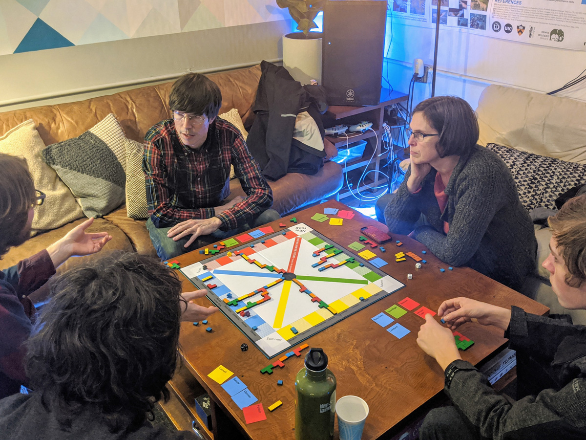

Paying for a Massively Multiplayer Online City, or Building Resilience
After seeing a digital model of Portland at the studio of nc3d during their Design Week open house, I asked if they considered how to finance an interactive online version of the city. One of their employees said yeah, they’d considered having a zone where people could explore for free and then it'd cost to go further into the city. I asked if they'd sell ads in the model (as that's the basic financial model of the web). Then I quickly launched into a description of a Common Ownership Self-Assessed Tax, something I’d read about in Radical Markets.
It would be the land of the city and anyone could claim areas to build upon for a fee of their choice, so they could buy all of downtown Portland for a nickel, but whatever price they choose, they have to sell it for that price to anyone who will pay it. And having to sell at that price means the transaction happens the moment a buyer appears. To keep someone from buying up all of an area for a hundred dollars or some higher amount and squatting indefinitely, it's a monthly fee. And so the cost could help to finance maintaining the platform and prevent people from being willing to put too high a price on a part of the map.
As a concept it can be anything but as a video game, I think it's a sandbox, and in that sense totally Minecraftian. People create structures in a free-to-play game and to have them remain on the shared interactive cityscape they pay the COST (Common Ownership Self-Assessed Tax) to secure them somewhere. A structure that anyone can buy from them. An interactive multiplayer city building game.
And the expansion games could be other cities along the Pacific Rim.
It's possible that like Fortnite where it's timed out—each game has that slowly constricting storm that forces all the players into contact—the game could have an earthquake that reduces the structures to rubble. West Coast earthquake cities with a lot of people, I’m thinking Portland because I live here but maybe even better in LA or Seattle. But then localization—playable in Japanese—the game could be set in Tokyo. Or, for the Spanish language, set in Santiago de Chile. Indonesia had a subduction zone earthquake in 2004. Similar concepts but new game mechanics could be done for coastal megacities anywhere in the world, where the water rises as the game progresses and people are deciding how to retreat or reinforce, building on higher ground or floating the burbs of a New York City or Miami.
A countdown, the coming collapse, that pressure. The structures that are resiliently built (we're getting to that) and remain standing, those continue on in the game. There are in-game ways to finance your creations—it gets crazy. I based a novel on that, it’s a story set in the future. While the software in my book doesn’t deal in the Common Ownership Self-Assessed Tax (or rather, as it's been recently renamed: SALSA, Self-Assessed Licenses Sold via Auction), in the same spirit, some of the game mechanics from the story might work. The bank and the jail, the four player characters: Builder, Looter, Police, and Investor. Naturally the concept is mutable and ongoing, so far it took three years to create the book; three years of thinking and talking with Andy Hoffman, the co-creator of the characters and story, writing and just random chance that happens over time, like reading Glen Weyl and Eric Posner's book and then seeing nc3d's model listed in the Design Week open houses calendar and talking with them and seeing their model.
To finance a massive online interactive model of a city, a multiplayer game. I enthused about it whenever I had an opportunity, and understanding how expensive it would be to create an online game, I simplified everything to a board game. Then began pitching it, and a game publisher replied, the Toolbox for Education and Social Action requested I get back with them. And to refine my proposal, I had to play this game!
I thought I could use a 3D printer to make the pieces and went to PDX Hackerspace. Jon Hannis helped me figure out the best way to produce the amount of pieces I'd need, the board game has hundreds of pieces. 3D printers being too slow, we used a laser cutter to make them out of 1/4" poplar. I play tested the game at their 2020 New Year's Eve party:

"When the earthquake hits, Portland could be the site of the largest oil spill in the history of the world." — Portland Mercury 2019
The total amount of oil spilled in Valdez is three percent of the fuel stored along the banks of the Willamette north of downtown. A tank farm, its ground created with dredge soils sprayed toward the riverbank to create new land—sucking it up from the river bottom, shooting it onto the land. And during the sustained shaking of the quake, the water below the surface rises through the soil, that's the liquefaction. Those tanks will rupture in a subduction zone quake, spilling the fuel into the river, disrupting the ecosystem and economy all down the Columbia and along the coast. This would be a severe environmental catastrophe and economic downturn. But that's an understatement.
Ninety percent of the liquid fuel for the state of Oregon is in tanks along the Willamette north of downtown Portland. And while people need them near the major transportation lines—with one megathrust along the Cascade corridor, those tanks will break, spill, set fire and destroy buildings. An oil spill all down the Columbia to the ocean. So maybe, while playing, the game would ask players if they wanted to reinforce the storage tanks. If they choose that, then it would give them the option of moving the tanks to bedrock.
Currently those tanks are on what’s called hydraulic fill. The Critical Energy Infrastructure Hub is built where the river used to be, on river sediments, dredge soil. Going forward, I hope to see where and how these tanks could be relocated, it's a very difficult technical and political problem. To distribute the storage of liquid fuel and industrial chemicals, to move them to bedrock.
It could be argued that impacts of the climate crisis will be felt sooner but, what is essentially overlooked in rational thinking, these earthquake events are random. The roll of the die is an effective way to emphasize this aspect of the hazard. I've heard we have a 30% chance of a catastrophic quake in the decades ahead, so a 1 or 2 on a six-sided die. It happens. The quake will happen. The rationalizations include cost benefit analysis and placing the event in the future, essentially rendering it mere speculation. Rather than fact.
"... but the calculated odds that a Cascadia earthquake will occur in the next 50 years range from 7-15 percent for a great earthquake affecting the entire Pacific Northwest to about 37 percent for a very large earthquake affecting southern Oregon and northern California. The likelihood of a M 9 Cascadia earthquake during our lifetimes and the consequences of such an earthquake are both so great that it is prudent to consider this type of earthquake when designing new structures or retrofit of existing structures, evaluating the seismic safety of existing structures, or planning emergency response and preparedness." — pg.5 Cascadia: Oregon’s Greatest Natural Threat
How virtual buildings remain standing
If people could build anywhere in a city, why not anywhere? Well, to have a valuable building, it needs to be connected. To incentivize the value of virtual land, for example, in downtown, it would be the proximity to transportation, the river and railroad. The interstate highway. The nexus of roads. The Willamette and Columbia rivers. The closer to the transportation hub the more valuable the land, incentivizing the denser urban form.
This could be modeled in the game. An aspect of real life, every city depends on interconnected lifelines:
1. Fuel (liquid) and natural gas
2. Water and waste water
3. Electricity
4. Transportation (air, water, land)
5. Communications
All buildings need to be connected to these lifelines, this serves to concentrate their location. The lifeline systems have dependencies, both physical and functional. Physical: they are often co-located. Functional: they often depend on each other—many of them rely on electricity. The waterlines, the electric grid to power the pumping stations. After the Big One, it could be a year without water and sewer in Portland. And after the earthquake hits the players' buildings, those that had reinforced their five lifelines, and built to Functional Recovery Standard, a building code that allows the structure to resume its function: their structures remain in the game.
And if this could be made, playing it does give one something to think about, our eventual earthquake and the need for resilient infrastructure has parallels all throughout the climate-impacted cities. And from the look of it, all cities will be impacted. Each in their own way. When people understand human-caused climate change and fully accept the consequences, there can be a more subtle form of denial: believing that it won't affect us, other people yes, but not at *home*.